Populiariausias
Fermentuota Lietuvoje nuo 2005 m.
Fermentuoti gėrimų koncentratai su gyvomis gerosiomis bakterijomis
Vienas arbatinis šaukštelis NAMIKO prie kiekvieno valgio – paprastas kasdienis įprotis geresniam virškinimui ir savijautai. Augalinis, be pridėtinio cukraus, be GMO ir glitimo.
- Nemokamas pristatymasužsakymams nuo 35 €
- 14 d. grąžinimasbe papildomų klausimų
- Užsakymai telefonu+370 632 01064
Be pridėtinio cukraus
Pagaminta Lietuvoje
-
Unikalus receptas nuo 2005 m.Ramūno tobulintas raugas – registruotas NAMIKO prekės ženklas
-
Gaminama ūkyje Kaišiadorių r.Natūrali fermentacija – be pramoninio cukraus, GMO ir glitimo
-
Perkant daugiau – pigiauRinkiniai iki 5 € pigiau · sąlygos platintojams
-
Užsakymas per 1 minutęBe registracijos arba telefonu +370 632 01064
-
Prenumerata kas mėnesįSu nuolaida, bet kada sustabdoma · užsisakyti
-
Nemokamas pristatymas nuo 35 €Paštomatai ir kurjeris visoje Lietuvoje, išsiunčiame per 1–2 d. d.
Vartojimas
Kaip vartoti NAMIKO
NAMIKO – fermentuotas maisto produktas, ne vaistas: jo nereikia dozuoti. Tiesiog įpilkite į maistą arba gėrimą prie kiekvieno valgio.
-
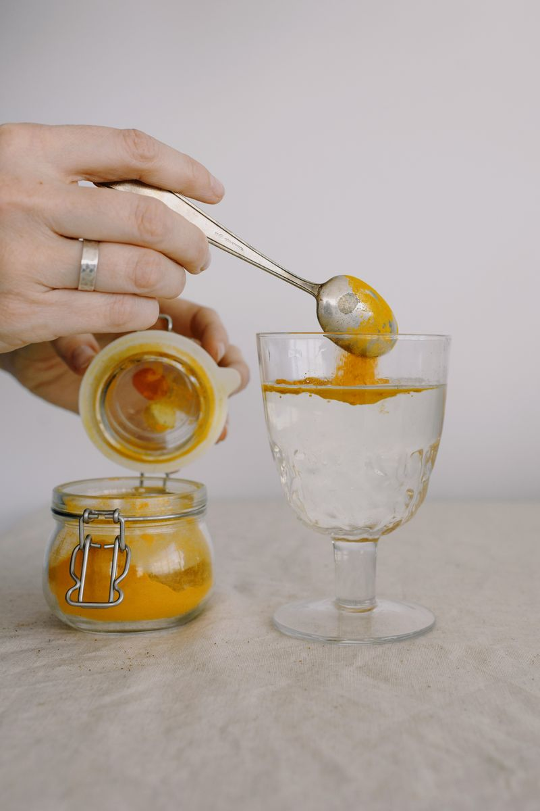
1 arbatinis šaukštelisSuplakite ir įpilkite šaukštelį
Prieš vartojimą gerai suplakite. Bent 1 arbatinį šaukštelį įpilkite į maistą (iki 50 °C) arba į stiklinę vandens, sulčių ar kito gėrimo.
-
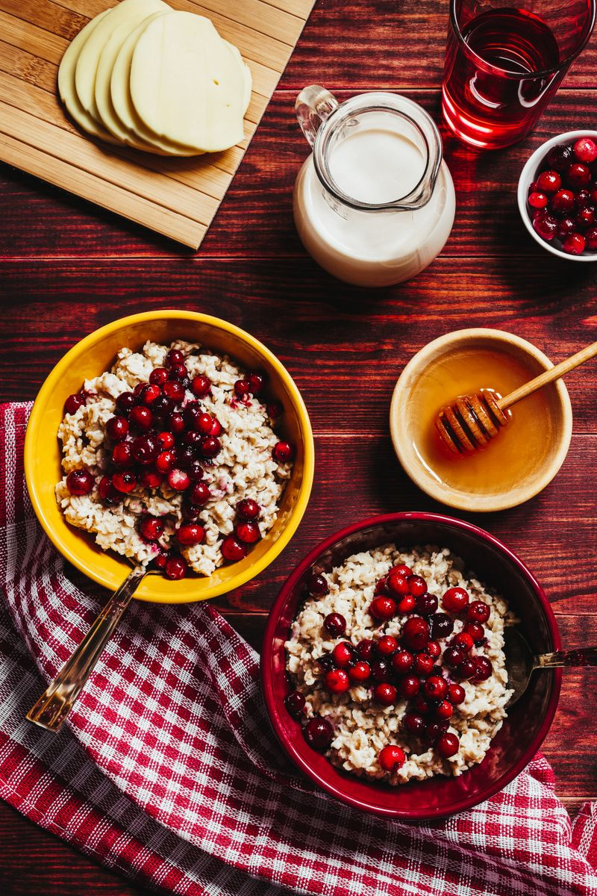
Pusryčiai · pietūs · vakarienėVartokite su kiekvienu valgiu
Pusryčiams, pietums ir vakarienei. Vėliau kiekį galite didinti pagal skonį – neperdozuosite, nes tai maistas, ne vaistai.
-
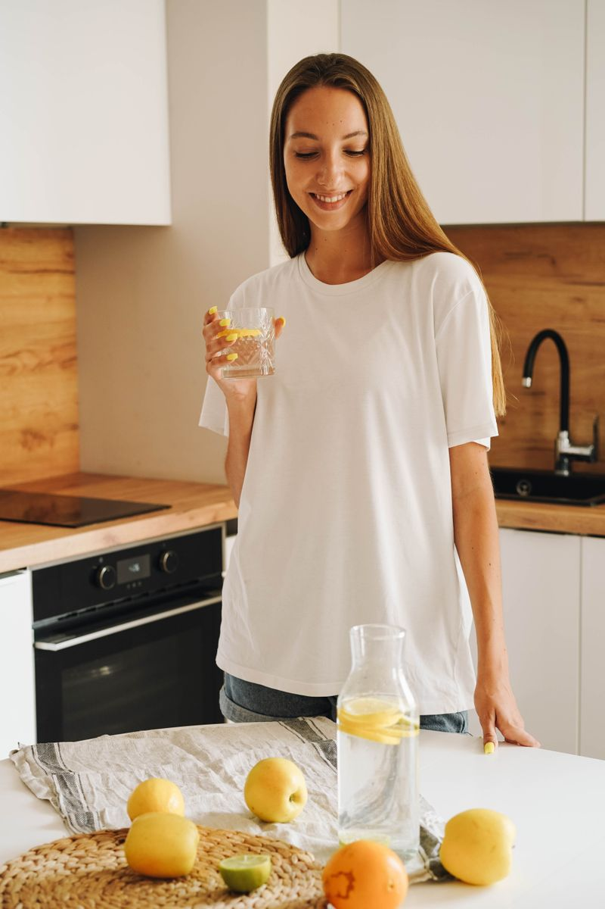
1 buteliukas ≈ 1 mėnuoLeiskite gerosioms bakterijoms dirbti
Žarnyne prasideda natūralūs rūgimo procesai, skatinantys naudingųjų mikroorganizmų veiklą. Vieno buteliuko užtenka maždaug mėnesiui.
Laikyti šaldytuve Atidarius suvartoti per 45 dienas 1 buteliukas ≈ 1 mėnuo vienam žmogui
Nuotraukos: Pexels – Ksenia Chernaya, Elena Leya, olia danilevich
El. parduotuvė
Populiariausi koncentratai
12 skonių po 750 ml, nuo 9 € – visi be pridėtinio cukraus, GMO ir glitimo.
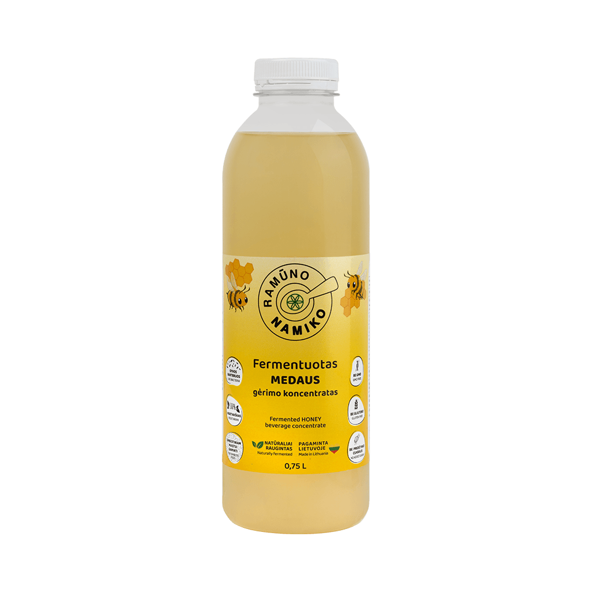
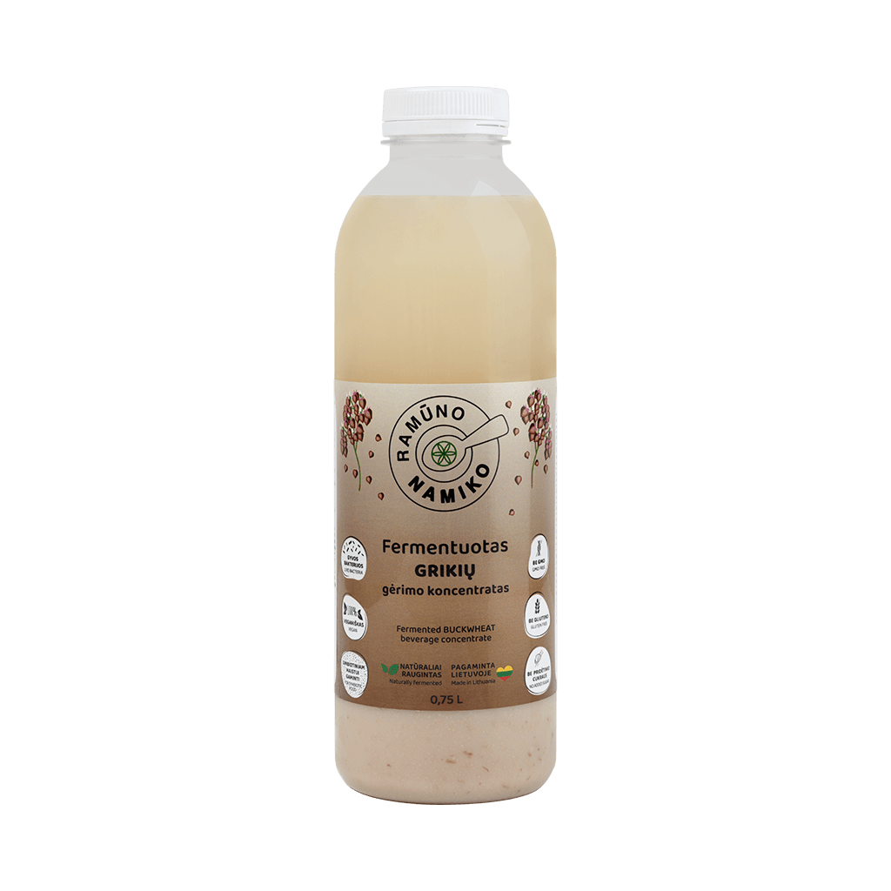
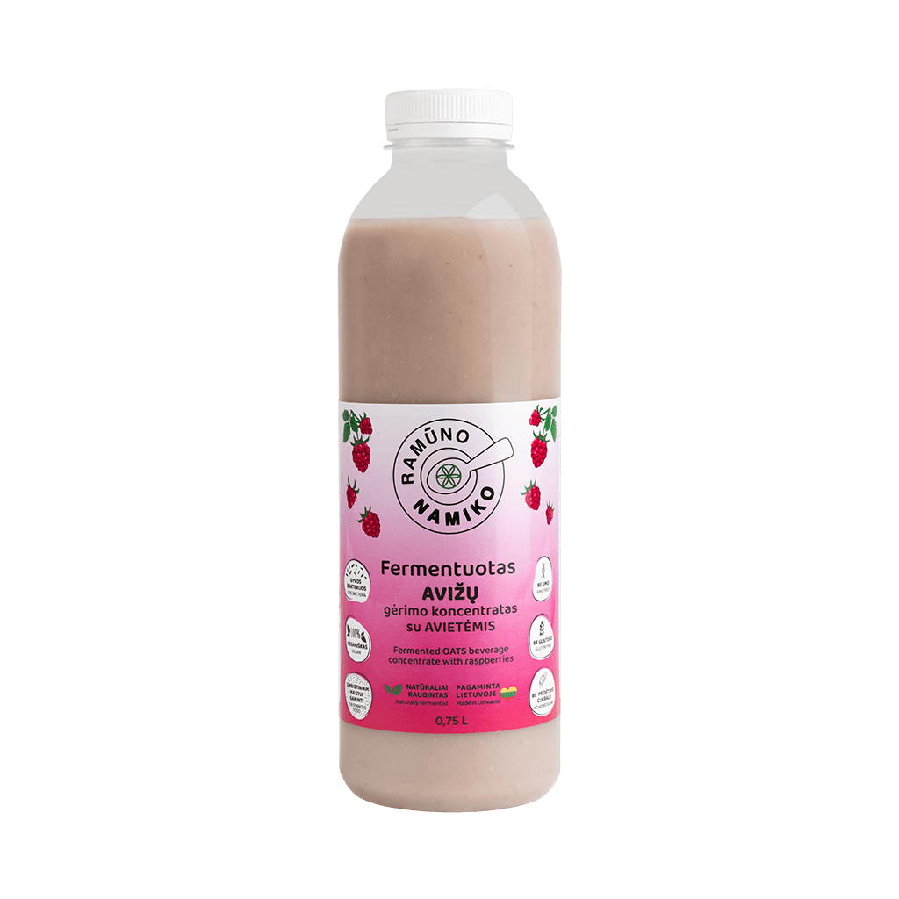
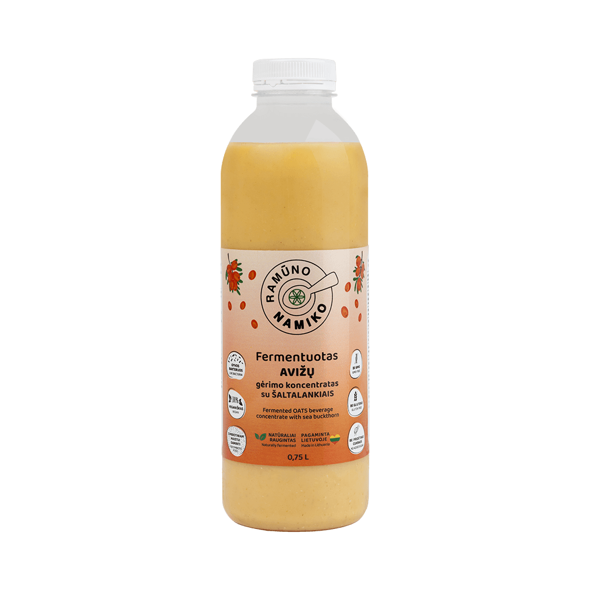
Turboraugas
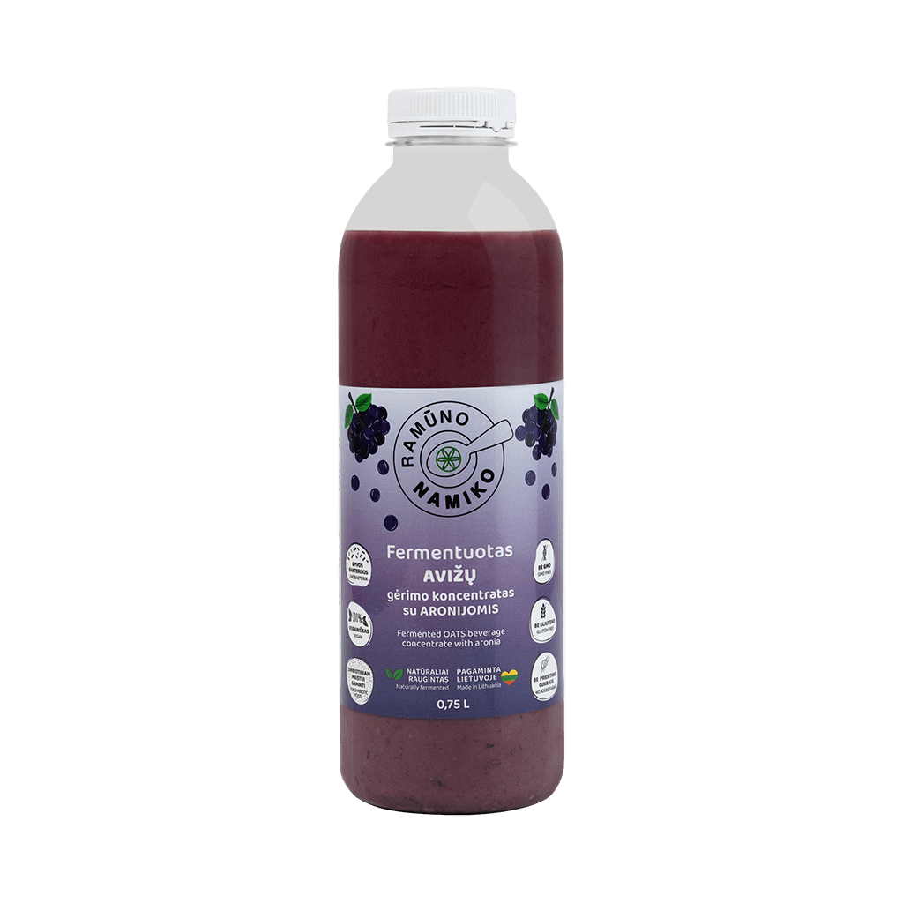
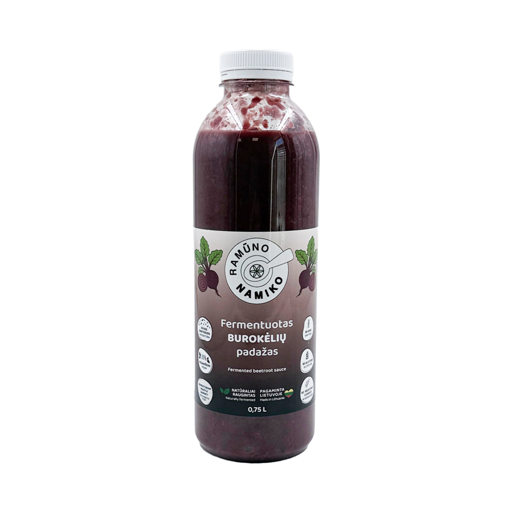
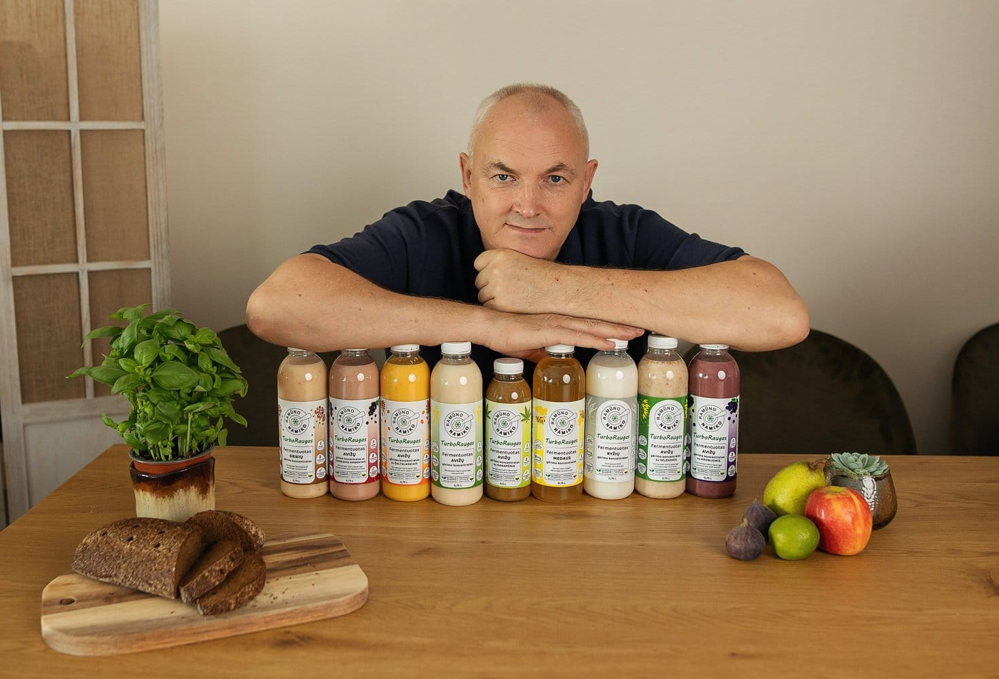
Kodėl NAMIKO
Kodėl rinktis NAMIKO
Gyvos gerosios bakterijosBiologiškai aktyvių rūgimą atliekančių mikroorganizmų kultūros kiekviename buteliuke.
Be pridėtinio cukrausŠvelnus saldumas gimsta fermentacijos metu – be sirupų ir saldiklių.
Be GMO, be laktozės, be glitimoPatvirtinta laboratorinių tyrimų ataskaitomis – rasite prie kiekvienos prekės.
100 % augalinisAvižos, grikiai, ryžiai, medus, uogos, vanduo ir raugas. Tinka veganams.
Universalus naudojimasĮ maistą kaip padažą, į gėrimus, maisto gaminimui ar daržovių rauginimui.
Pagaminta LietuvojeMB „Namiko LT“, Kaišiadorių r. Registruotas maisto tvarkymo subjektas.
NAMIKO – maisto produktas, ne vaistas ar maisto papildas. Subalansuota ir įvairi mityba yra svarbi geros sveikatos sąlyga.
Rinkiniai
Rinkiniai: daugiau skonių, mažesnė kaina
Visiems rinkiniams taikoma nuolaida, o nuo 35 € pristatymas nemokamas.
PRADEDANTIESIEMS
2 × 0,75 l · avižų + medaus
17,00 €18,00 €
8,50 € už buteliuką
- Du švelniausi skoniai pažinčiai
- Užtenka ~2 mėn. vienam žmogui
KLASIKA
3 × 0,75 l · avižų + grikių + ryžių
25,00 €27,00 €
8,33 € už buteliuką
- Trys klasikiniai javų skoniai
- Užtenka ~3 mėn. vienam žmogui
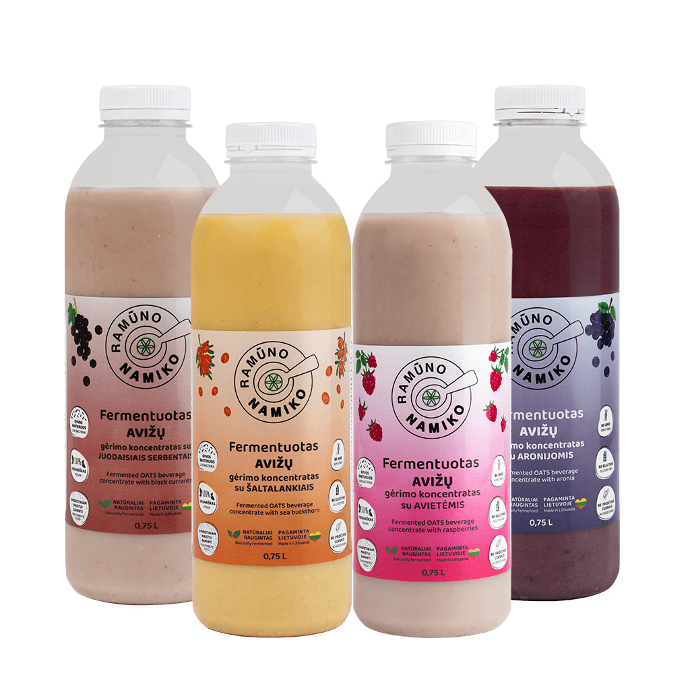
UOGOS
4 × 0,75 l · avietės, šaltalankiai, serbentai, aronijos
40,00 €42,00 €
10,00 € už buteliuką
- Vitamino C bomba su gyvu raugu
- Keturi uogų skoniai – kiekvienai dienai
ŠEIMAI
5 × 0,75 l · penki skirtingi skoniai
44,00 €48,00 €
8,80 € už buteliuką · sutaupote 4 €
- Avižų, medaus, sėlenų, šaltalankių, serbentų
- Pakanka mėnesiui visai šeimai
Atsiliepimai
Ką sako vartojantys NAMIKO
„Vartoju NAMIKO jau pusmetį. Ačiū Ramūnui už šį produktą – savijauta visai kitokia…“
„Pradėjau gerti Namiko raugą – dabar viskas susitvarkė. Jau dešimtas mėnuo be vaistų…“
„Vartoju Namiko ir vakarais naudoju kaip veido toniką – oda pastebimai švaresnė ir lygesnė.“
DUK
Dažniausi klausimai prieš perkant
Kaip vartoti NAMIKO?
Kiekvieno valgio metu bent 1 arbatiniu šaukšteliu pašlakstykite maistą arba sumaišykite su puse stiklinės vandens ir išgerkite valgio metu. Maistas turėtų būti ne karštesnis nei 50 °C.
Ar yra pridėtinio cukraus?
Ne. Gaminama nenaudojant pramoninio cukraus, sirupų ar saldiklių. Produkte yra tik natūralių cukrų, susidariusių fermentacijos metu, kai javų krakmolas skyla į paprastuosius cukrus.
Ar tinka netoleruojantiems glitimo ar laktozės?
Visi NAMIKO produktai yra be laktozės ir be GMO. Glitimo tyrimų ataskaitas pagal ES reglamentą Nr. 828/2014 rasite prie kiekvienos prekės skirtuke „Tyrimai“.
Kur laikyti ir kiek laiko galioja?
Laikykite +2…+18 °C temperatūroje, atidarius – šaldytuve ir suvartokite per 45 dienas. Tinkamumo data nurodyta ant kiekvieno buteliuko kamštelio.
Kiek kainuoja pristatymas ir kada gausiu?
Užsakymams nuo 35 € pristatymas visoje Lietuvoje nemokamas. Mažesniems užsakymams kaina priklauso nuo pasirinkto būdo ir matoma krepšelyje. Siuntas išsiunčiame per 1–2 darbo dienas.
Ar galiu užsisakyti telefonu?
Taip – skambinkite +370 632 01064 arba rašykite info@namiko.lt. Taip pat NAMIKO galite rasti pas platintojus Lietuvoje ir užsienyje.